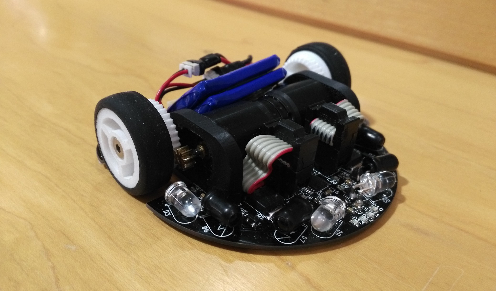

マイクロマウス競技
マイクロマウスとは

マイクロマウスの例
迷路
実際の迷路
迷路
実際の迷路
概要
マイクロマウスとは，人工的に作られた迷路を探索してゴールを目指す知的ロボットです．マイクロマウスの特徴はその名前の通りとても小さいことです．一般的なマウスの大きさは10cm程度で，手のひらにすっぽり収まる大きさです．
ルール
迷路は，16x16区画の計256区画から成ります．競技前にマウスが知っているのは，スタート区画とゴール区画の位置だけです．センサなどを使って壁を判定し，ゴールを目指します．走行回数と持ち時間が決められており，スタート地点を出発してからゴール地点に到達した走行の中で，最短時間のものが記録として残ります．
マイクロマウス競技の歴史
日本でこの競技が始まったのは1980年です．長い歴史にもかかわらず，ルールがあまり変わらないのがマイクロマウス競技の特徴で， 数年単位という時間をかけて開発することができます．
近年のマイクロマウス
吸引機構
ハーフサイズのマウス
ハーフサイズのマウス
吸引機構
マウスが高速で走行すると，車体が浮き上がってしまい，タイヤが空回りしてしまいます．また，高速でカーブを曲がろうすると遠心力で車体が横転してしまいます．それを防ぐために用いられているのが吸引機構です．車体の裏から地面を吸引することで，タイヤが空回りすることなく高速に走行することができます．
ハーフサイズクラス
迷路の1区画が18cmから9cmと半分のサイズの競技が追加されました．しかし，迷路全体の大きさは変わらないの区画数は4倍です．
部品のサイズが小さくなっても，工具や工作機械の精度は変わりません．これが意味することは，単純に考えるとあらゆる誤差が2倍になることを意味します．